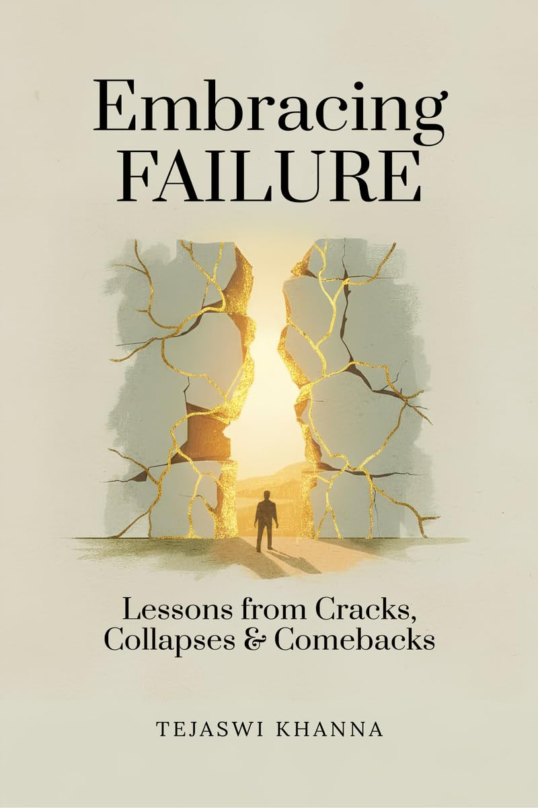

Embracing Failure
Lessons from Cracks, Collapses & Comebacks
Embracing Failure reflects on the fragile, honest moments when life seems to crack. Using personal stories, practical exercises, and the gentle philosophy of kintsugi, this book shows how brokenness can become a map back to yourself — clearer, kinder, and more whole.
Failure
We've all met it — in exams, in careers, in love, in dreams that never took flight. But what if failure was never your enemy at all? What if it was your most patient teacher, quietly shaping the person you're meant to become?
In Embracing Failure, Tejaswi Khanna takes readers on a reflective journey through stories, parables, and gentle practices that reframe how we see our stumbles. Through the eyes of two seekers — Ishaan and Dev — and through tales of mountains, rivers, broken vases, and phoenixes, this book becomes both mirror and map for anyone who's ever fallen and wondered if they could rise again.
Each chapter ends with Reflection Nuggets and Practical Exercises that turn philosophy into experience — inviting you not to rush through, but to walk with the book, to let it breathe with you.
Written with simplicity and depth, Embracing Failure is less a self-help manual and more a spiritual companion — reminding us that every fall holds a lesson, every crack lets the light in, and that the teacher we seek often hides in the very places we resist.